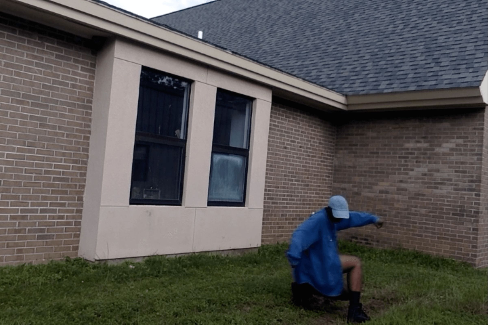
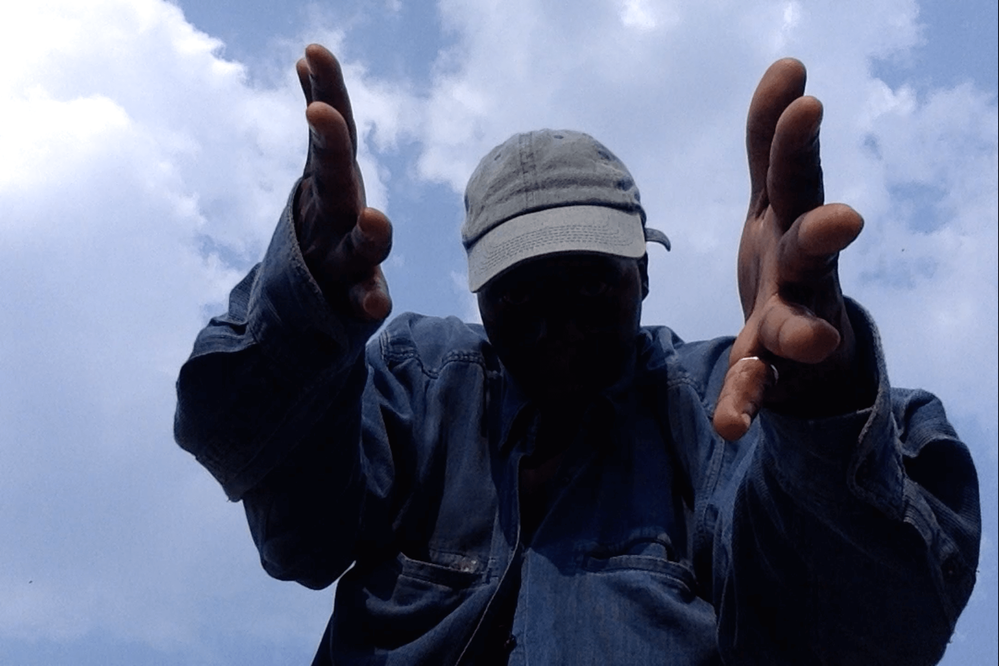
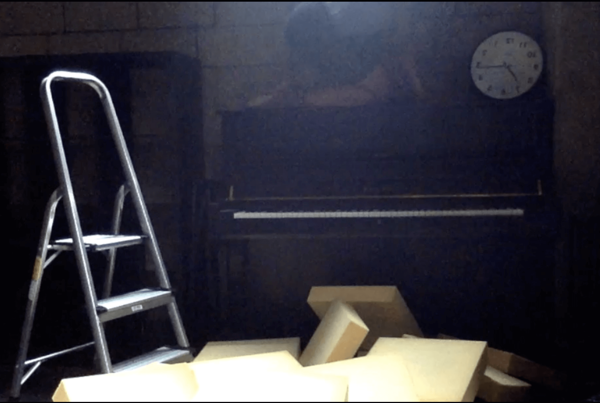
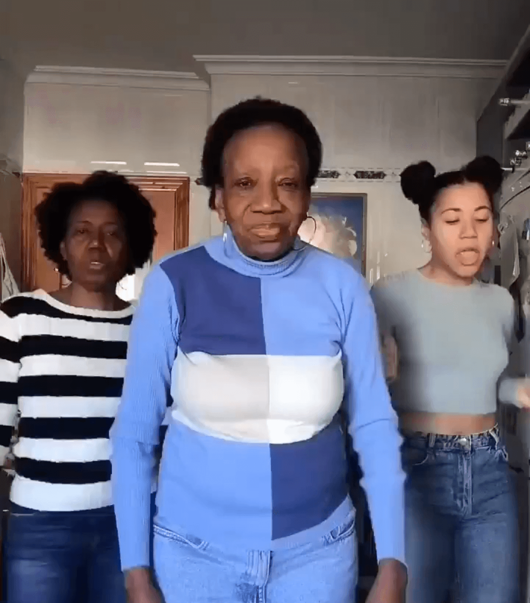
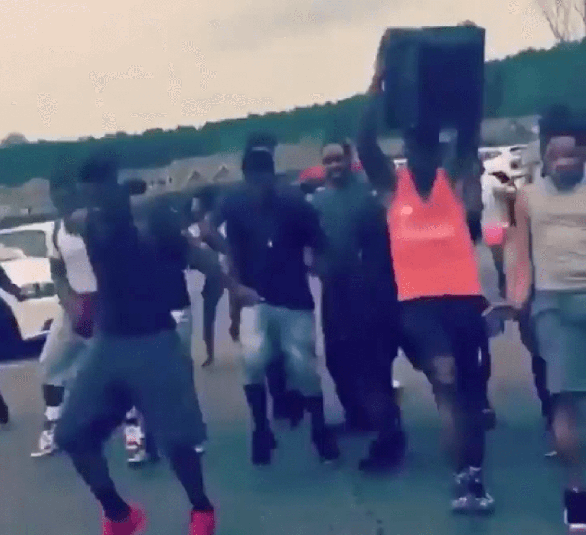
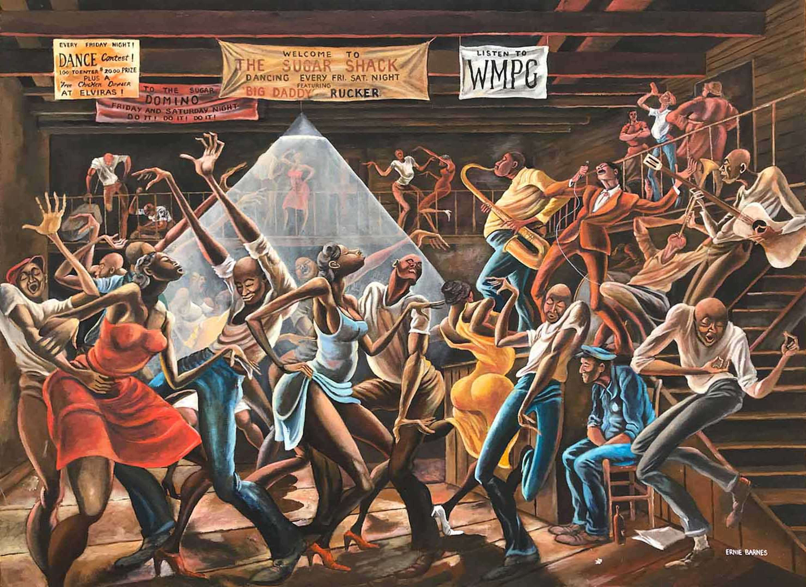
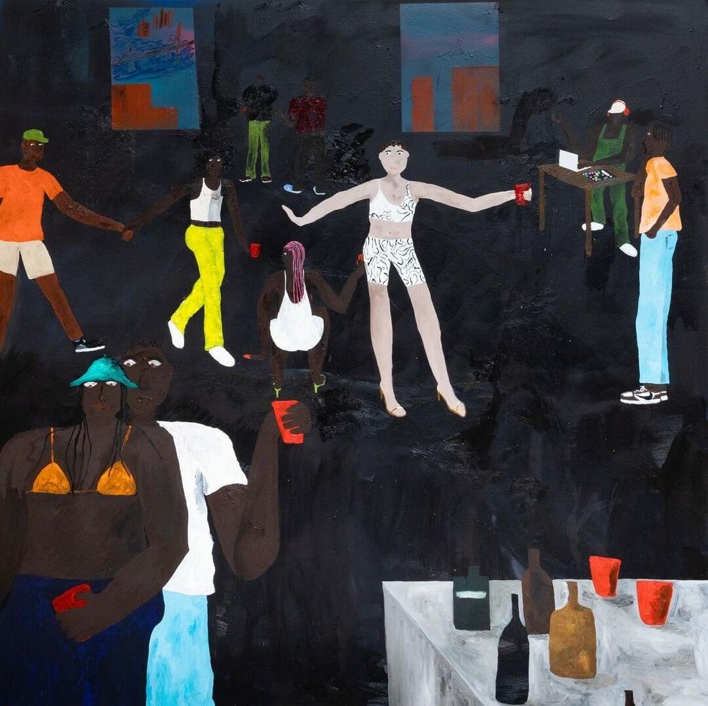

-

-

-

-

-

-

-

-

-

-

-

about
- 
- 
- 
-

- 
- 
- 
- 
1 of 92
VIDEO DESCRIPTION:
Black person in an office space on a wood floor in a contorted/crawling-like position. The person's face is blurred in motion and their head is in rotation. Video posted on YouTube as “Guy Looks Scary As He Bends in Weird Positions” to shape this body as absurd.
But I see an opening.

5 of 92
VIDEO DESCRIPTION:
A large group of mostly Black people are gathered in an outside concert like space. They are dancing jubilantly to a bass heavy house track.
10 of 92
VIDEO DESCRIPTION:
Soundless video of a Black person moving, rolling their hips and ass in a flowing blue dress, zoomed in only their lower half is visible. The wavy pattern of the dress in motion reminds me of waves.
11 of 92
VIDEO DESCRIPTION:
Black person making screaming faces outside without making noise from their mouth and slightly moving their body. The background is the blue sky.
12 of 92
IMAGE DESCRIPTION:
A blurry photo of a Black person. The image does not move but it looks like the person had been moving. The person might have been telling a story. Possibly outside when it was dark.
14 of 92
VIDEO DESCRIPTION:
Black person moving playfully with a thick black coat around their head and arms. They move both the coat and their body for a minute and 3 seconds.
18 of 92
VIDEO DESCRIPTION:
A Black dancer is on stage in a white shirt. They are also wearing black pants with electric green stripes on the side. The pants read in red “ONLY. STAFF.” The lights hanging from the sky match the energy of the dancer and their outfit.
19 of 92
VIDEO DESCRIPTION:
What those hands sound like? Black clapping hand emoji does not move. There is music in the background for 40 seconds.
9 of 92
VIDEO DESCRIPTION:
Features heads and arms of a large group of Black people dancing, some wearing hats and durags. Many of them dance with arms raised and hands splayed in the air. They are in space that is surrounded by trees, which frame the top of their heads.


22 of 92
IMAGE DESCRIPTION:
Four tiles with black backgrounds, white wavy arial letters forming words (glide - jerk - pop - lean) that voice, command, instruct, suggest. How you do that?
25 of 92
VIDEO DESCRIPTION:
Black person wearing denim hat, shirt, shorts and black boots dancing on grass in front of a brown brick building.
29 of 92
VIDEO DESCRIPTION:
Black person wearing a denim hat and shirt moves with the clouds.
33 of 92
VIDEO DESCRIPTION:
1. For 58 seconds you hear the voices of MC Debra (Selvin Mizrahi) and Jack Mizrahi.
This video is still.
2. The browns of Black. This is a shade of brown. Pantone has given this shade of brown a number. I could try to describe this shade of brown with comparisons. But I say, let's imagine this brown moving.
3. Score her. Score her. It's a chop...Cut the music. What was she giving and why wasn't it enough?
If she doesn't get her life - then what does she have.
36 of 92
VIDEO DESCRIPTION:
1. For 1 minute and 2 seconds you hear the voice of Tim Westwood, Sway, and Shazaam. This video is still.
2. The browns of Black. This is a shade of brown. Pantone has given this shade of brown a number. I could try to describe this shade of brown with comparisons. But I say, let's imagine this brown moving.
3. Pivot on one foot while moving the hands in a wavy motion like on a surfboard. Done correctly you can levitate!
37 of 92
IMAGE DESCRIPTION:
A still from a cypher video ‘da war zone’ the Black dancer in the center wearing a large white long sleeved t-shirt, black beanie, large dark blue oversized jeans and black sneaker seems to have achieved an otherworldly level of beat riding. The cypher circle looks on with envy and amazement.
41 of 92
VIDEO DESCRIPTION:
This video is of a Black person stuck - falling - and expanding. A piano, clock, silver ladder, yellow cushions, bookshelf and brick wall make up the surroundings. The sound is comprised of claps and voices but the words are unclear the first time you play the video.
45 of 92
IMAGE DESCRIPTION:
A black and white photograph of a large crowd of people in a circular formation. The people on the outside of the circle are standing. The people in the center are seated. They are witnessing a happening. What they can see couldn't be captured by the lens of the camera. I guess you had to be there to really know how the bodies made the blur and brought the crowd to look on in reverent enthusiasm
46 of 92
VIDEO DESCRIPTION:
Three Black people dancing side by side. They look into the camera offering us a bit of their joy. They move to a beat that calls for some wining.
REPOST:
@blackdancehistory
IG PAGE Curated by @shantefagans DOCUMENTING BLACK DANCE FOR EDUCATIONAL + ENTERTAINMENT PURPOSES.
MOMMY/DAUGHTER/GRANDDAUGHTER DANCE:
HAPPY MOTHER'S DAY
💃🏾🖤♥️🖤
🔃 Via: @rosebanez
¿Y qué se supone que tengo que decir?😂😂😂😂 @cimafunk 🔥
47 of 92
VIDEO DESCRIPTION:
Black person in a blue patterned dress shirt, blue pants, and wine colored shoes glides across the floor in what looks like a cafeteria or restaurant. This person moves with a wiggle of the heels and toes. The people around smile seemingly enjoying the style and finesse of this smooth dancer.
REPOST:
@blackdancehistory
Here he is again, y'all! 😄 The magnificent @vusi_maqandisa
🔃 Via: @grownfolksmusic
Happy Friday - - what's his name?? 👀
FRIDAY!!!! 🎊🎉🍸🍷🍹🎉
48 of 92
VIDEO DESCRIPTION:
Two black people dancing [steppin] dressed alike in gold rimmed glasses, white and blue nikes, blue shorts, and white t-shirts except one of them wears a hat that matches the blue of the shorts and s studded earring. The other person has hooped earrings and two toned braided.
REPOST:
@blackdancehistory
Ooooooo' KAY ❗🕺🏾💃🏾
🔃 Via: @punkins_3
Song: Best of Me by
@anthonyhamiltonofficial
They back at it
@the_mitchells_dance_experience
49 of 92
VIDEO DESCRIPTION:
A Black person holds a speaker on top of their head dance running towards the camera. The crew of Black folks around them are also dance running. Someone has a whistle. They are turnt up.
REPOST:
@blackdancehistory
IG Page Curated by The Great @shernitasofly Sharing Black Joy through the art of Dance
50 of 92
IMAGE DESCRIPTION:
A photograph of the prolific painting The Sugar Shack (1976) by Ernie Barnes (1938-2009). This painting is 3 by 5 feet and is said to be in the neo-mannerist style. When searching 'black dance art' on the internet, you find images and prints of this image prominently. Printed versions of The Sugar Shack appeared and reappeared throughout my childhood. The work depicts Black folk dancing in a room, a wooden shack. Banners hang from the beams reading The Sugar Shack; listen to WMPC, dance contest, and Domino Friday and Saturday night. The dance floor is centered, a stage is hidden, and a second-floor balcony wraps around the back and side of the painting. The entire image is in motion. There is only one character in the picture in stillness. The person sits in a chair beside the stage with stairs to their back, surrounded by the danced crowd. This person sits in a blue worker's uniform in what can be read as a state of defeat or exhaustion. The group surrounding this moment moves expressively together and apart in various forms of euphoria. Barnes highlights the dancers' hips, thighs, and arms, concentrating on vibrant colors and exaggerated shadows. Every part of the dancers' bodies seems to groove to the band's sounds consisting of a singer, guitar player, saxophone, trumpet, and drummer.
Via: Los Angeles Times
Ernie Barnes, a former NFL football player, painted “The Sugar Shack.” It appeared on the sitcom “Good Times” and as the album cover for Marvin Gaye’s “I Want You.”
51 of 92
IMAGE DESCRIPTION:
1.
Healthy (2021) by Marcus Leslie Singleton (1990 - present) The painting is oil and spray on canvas. @marcuslesliesingleton creates paintings that depict life’s routine moments–fishing, driving a car, having a conversation, smoking a cigarette or just hanging out. They aim to highlight the preciousness of life by celebrating Black life, culture, music, folklore, religion and tradition.
Healthy was featured in the group exhibition Shake Up The Room at September gallery April 17 - May 30, 2021 curated by Michael Mosby.
2.
A party scene is set in a dark space, a black room. Two windows are in the background parallel. The view suggests a cityscape. The DJ wears a green jumpsuit, white sneakers, and red headphones and plays music off a laptop. There are people of various shades of brown with one very light, possibly white person-centered in a white cropped tank top and spandex shorts set, and open toe heeled sandals. One person with pink cornrow braids, a body-con white dress, and green open-toe sandals is in what looks like a comfortable squat. There is a couple holding hands in the middle left hand of the paint walking in the direction of the dancefloor. There is also a couple in the foreground dancing close chest to back; one has jeans and a t-shirt, the other has a turquoise hat, orange bra, blue pants, and holds a reed cup. The table to the right of them holds some bottles and cups. Three other people are hanging around the painting waiting for something to happen.
I've been to this party. The seemingly mundane and quiet possibility in this painting is its strength. The work jumped out at me as I scrolled through the @supportblackart IG page. I could smell the air and feel the bass in this soon the start or soon to be over party.